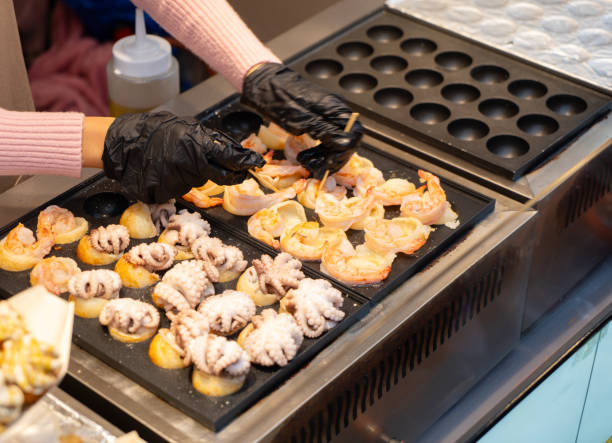

Featured Street Foods
Discover some of the most iconic and delicious street foods from around the world.

Nasi Lemak
A fragrant rice dish with coconut milk, anchovies, peanuts, and a spicy sambal.

Pad Thai
A stir-fried rice noodle dish with shrimp, tofu, eggs, and bean sprouts.
Tacos
A traditional Mexican street food consisting of a corn or wheat tortilla topped with various ingredients.

Takoyaki
A Japanese octopus ball snack that's deep-fried and topped with mayonnaise, bonito flakes, and pickled ginger.